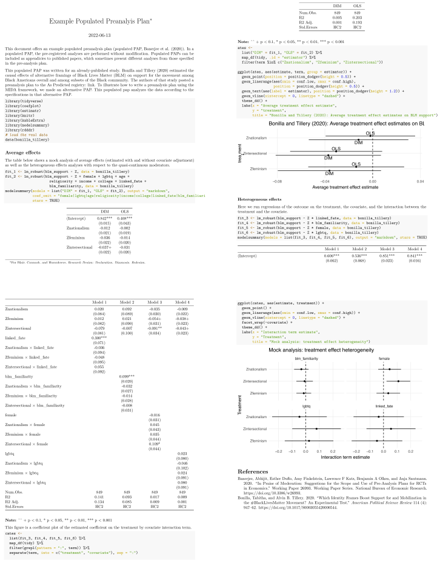

22 Realization
Realization is the implementation phase of a study. Implementing the data strategy means sampling the units as planned, allocating treatments according to the randomization procedure, and executing the measurement protocol. Implementing the answer strategy means applying the planned summary functions to the realized data. Of course, things never go so smoothly. Inevitably, some portion of the design fails to go according to plan: subjects do not comply with treatments, others cannot be located to answer survey questions, or governments interfere with the study as a whole. Sometimes, the answer strategies are discovered to be biased or imprecise or otherwise wanting. Declared designs can be adapted as the study changes, both to help make choices when you need to pivot and so that at the end there is a “realized design” to compare to the “planned design.”
When implementation is complete, the design preregistered in an analysis plan can be “populated” to report on analyses as planned and the realized design reconciled with the planned design. In writing up the study, the design forms the center: why we should believe the answers we report. The declared design can be used in the write-up to convince reviewers of the study’s quality, and also as a tool to assess the impact of reviewer suggestions on the design.
22.1 Pivoting
When something goes wrong or you learn things work differently from what you expected, you need to pivot. You face two decisions: go/no-go, and if go, should you alter your research design to account for the new realities? Redesigning the study and diagnosing the possible new designs can help you make these decisions.
We illustrate with three real choices we had to make, one in which criticism of a design by participants led to a simple improvement to the assignment mechanism (\(D\)) and two in which difficulties implementing assignments led to a change in inquiries (\(I\)) but for quite different reasons.
The first choice was for a research design one of us worked on in coordination with political parties in Uganda. Under the design, a set of MPs were to be randomly selected into a pilot political communications program. Shortly before implementation, however, the political parties complained that the randomization scheme was one that could produce inequalities between the parties, with some parties getting more benefits than others just because of the luck of the draw. They asked whether it would be possible to fix things so that each party would have the same share participating.
The answer of course was yes: a change in \(D\) to employ blocked random assignment addressed the fairness concerns of the party, but also led to a demonstrably better design. In the final design, members of each party pulled names out of a hat that contained names only of people from their own party. This is the rare pivot that both attends to an unanticipated complaint and improves the design in the offing.
The second study was one in which another one of us faced a serious noncompliance problem. We launched a cluster-randomized, placebo-controlled 2x2 factorial trial in Nigeria of a film treatment and a text message blast treatment. Treatment was to be rolled out in 200 communities. A few days after treatment delivery began, we noticed that the number of replies was extremely similar in treatment and placebo communities, counter to expectations. We discovered that our research partner, the cell phone company, had delivered the treatment message to both groups! By that time, treatments had been delivered to 106 communities (about half the sample).
We faced the choice to abandon the study or pivot and adapt the study. We quickly agreed that we could not continue research in the 106 communities, because they had received at least partial treatment. We were left with 109 from our original sample of 200 plus 15 alternates that were selected in the same random sampling process. We determined we could not retain all four treatment conditions and the pure control. We decided that at most we could have two conditions, with about 50 units in each. But which ones? We were reticent to lose the text message or the film treatments, as both tested two distinct theoretical mechanisms for how to encourage prosocial behaviors. We decided to drop the pure control group, the fifth condition, as well as the placebo text message condition. In this way, we could learn about the effect of the film (compared to placebo) and about the effect of the text messages (compared to none).1 Thus we had to reduce the size of our inquiry set. Essentially we ended up salvaging a subpart of our design without having to materially change any design elements within this subpart.
Finally, one of us was involved with a get-out-the-vote canvassing experiment gone wrong during the 2014 Senate race in New Hampshire. We randomly assigned 4,230 of 8,530 subjects to treatment. However, approximately two weeks before the election, canvassers had only attempted 746 subjects (17.6% of the treatment group) and delivered treatment to just 152 subjects (3.6%). In essence, the implementer had been overly optimistic about the number of subjects they would be able to contact in time for the election. In their revised assessment the organization estimated that they would only be able to attempt to contact 900 more voters. They also told us also that they believed that their efforts would be best spent on voters with above-median vote propensities.
We faced a choice: should we (1) stick to our design and continue trying to treat 900 of the remaining subjects that were allocated to treatment, knowing that we will have many non-compliers in this set or (2) alter D to conduct a whole new random assignment among above-median propensity voters only. A design diagnosis reveals a clear course of action. Even though it decreases the overall sample size, restricting the study to the above-median propensity voters substantially increases the precision of the design.2 Opting for this modification to D required thinking through whether we were willing to accept a change in I since the set of compliers for which we could generate estimates is different under the two designs.
Pivoting is sometimes hard and sometimes easy but, very often, assessing whether or how to pivot requires thinking through the full design to see which parts have to change as others change. If you do this through redesign your design becomes a living document and becomes a tool to guide you along the research path, not just as a document to write at the beginning of the study and revisit when you are writing up.
22.2 Populated preanalysis plan
A preanalysis plan describes how study data will eventually be analyzed, but those plans may change during the process of producing a finished report, article, or book. Inevitably, authors of preanalysis plans fail to anticipate how the data generated by the study will eventually be analyzed. Some reasons for discrepancies were discussed in the previous section on pivoting, but others intervene as well. A common reason is that PAPs promise too many analyses. In writing a concise paper, some analyses are dropped, others are combined, and still others are added during the writing and revision process. In the next section, we’ll describe how to reconcile analyses-as-planned with analyses-as-implemented, but this present section is about what to do with your analysis plan immediately after getting the data back.
We echo proposals made in Banerjee et al. (2020) and Alrababa’h et al. (2022) that researchers should produce short reports that fulfill the promises made in their PAPs. Banerjee et al. (2020) emphasize that writing PAPs is difficult and usually time-constrained, so it is natural that the final paper will reflect further thinking about the full set of empirical approaches. A “populated PAP” serves to communicate the results of the promised analyses. Alrababa’h et al. (2022) cite the tendency of researchers to abandon the publication of studies that return null results. To address the resulting publication bias, they recommend “null results reports” that share the results of the preregistered analyses. We think these reports (whether the results come back null or otherwise) can easily be added to the appendix of the final write-up or posted to a study registry.
We recommended in Section 21.6 that authors include mock analyses in their PAPs using simulated data. Doing so has the significant benefit of being specific about the details of the answer strategy. A further benefit comes when it is time to produce a populated PAP, since the realized data can quite straightforwardly be swapped in for the mock data. Given the time invested in building simulated analyses for the PAP, writing up a populated PAP takes only as much effort as is needed to clean the data (which will need to be done in any case).
22.2.1 Example
In Chapter 21, we declared the design for Bonilla and Tillery (2020) following their preanalysis plan. In doing so, we declared an answer strategy in code. In our populated PAP (shown in Figure 22.1 and available in the appendix), we can run that same answer strategy code, but swap out the simulated data for the real data collected during the study.

22.3 Reconciliation
Reconciliation is the process of comparing the final design to the planned design. Understanding the differences between the two and the justifications for the changes can help us understand what to learn from the final results.
Suppose the original design described a three-arm trial: one control and two treatments, but the design as implemented drops all subjects assigned to the second treatment. Sometimes, this is an entirely appropriate and reasonable design modification. Perhaps the second treatment was simply not delivered due to an implementation failure. Other times, these modifications are less benign. Perhaps the second treatment effect estimate did not achieve statistical significance, so the author omitted it from the analysis.
For this reason, we recommend that authors reconcile the design as planned with the design as implemented. A reconciliation can be a plain description of the deviations from the PAP, with justifications where appropriate. A more involved reconciliation would include a declaration of the planned design, a declaration of the implemented design, and a list of the differences. This “diff” of the designs can be automated through the declaration of both designs in computer code, then comparing the two design objects line by line (see the function compare_designs() in DeclareDesign).
In some cases, reconciliation will lead to additional learning beyond what can be inferred from the final design itself. When some units refuse to be included in the study sample or some units refuse measurement, we get important information about those units. Understanding sample exclusions, noncompliance, and attrition not only may inform future research design planning choices, but also contribute substantively to our understanding of the social setting.
There are no current standards for how to report reconciliation. We recommend, however, providing two types of tables, a qualitative Inquiry reconciliation table and a quantitative Answer strategy reconciliation table. In the latter case, especially, guiding readers to relevant discussions or sections of replication code can make the reconciliation tables easier to evaluate. Such answer strategy reconciliation tables could also usefully include output from diagnosis comparisons to provide motivation for change. In general they should also include brief explanations for decisions taken.
We provide illustrations for both of these in Table 22.1 and Table 22.2.
| Inquiry | In the preanalysis plan | In the paper | In the appendix |
|---|---|---|---|
| Gender effect | X | X | |
| Age effect | X |
| Inquiry | Following A from the PAP | Following A from the paper | Notes |
|---|---|---|---|
| Gender effect | estimate = 0.6, s.e = 0.31 | estimate = 0.6, s.e = 0.25 | Difference due to change in control variables [provide cross references to tables and code] |
22.3.1 Example
In Chapter 21, we described the preanalysis plan registered by Bonilla and Tillery (2020). We reconcile the set of conditional average treatment effect (CATE) analyses planned in that PAP, the analyses reported in the paper, and those reported in the appendix at the request of reviewers in Table 22.3. In column two, we see that the authors planned four CATE estimations: effects by familiarity with Black Lives Matter; by gender; by LGBTQ status; and by linked fate. Only two of those are reported in the paper; the others may have been excluded for space reasons. Another way to handle these results would be to present them in a populated PAP posted on their Web site or in the paper’s appendix.
In their appendix, the authors report on a set of analyses requested by reviewers. We see this as an excellent example of transparently presenting the set of planned analyses and highlighting the analyses that were added afterward and why they were added. They write: “We have been asked to consider other pertinent moderations beyond gender and LGBTQ+ status. They are contained in the four following sections.”
This small Inquiry reconciliation table describes the heterogeneous effects analyses the researchers planned, those reported in the paper, and those reported in the appendix at the request of reviewers.
| Covariate | In the preanalysis plan | In the paper | In the appendix (at the request of reviewers) |
|---|---|---|---|
| Familiarity with BLM | X | ||
| Gender | X | X | |
| LGBTQ status | X | X | |
| Linked fate | X | ||
| Religiosity | X | ||
| Region | X | ||
| Age | X | ||
| Education | X |
22.4 Writing
When writing up an empirical paper, authors have multiple goals. They want to convince reviewers and readers that the research question they are tackling is important and their research design provides useful answers to that question. They sometimes also want to influence decision-makers like policymakers, businesses, and journalists. Communicating the elements of MIDA and a diagnosis of the design in a study write-up serve both goals. The declaration in terms of MIDA in the paper enables readers to understand what research design was implemented, and the diagnosis the inferential properties of the design.
Elements of MIDA may appear throughout a paper. In Figure 22.2 below, we annotate Mousa (2020) by highlighting where in the article each design component is discussed. The study reports on the results of a randomized experiment in which Iraqi Christians were assigned either to an all-Christian soccer team or a team in which they would play alongside Muslims. The experiment tested whether being on a mixed team affected intergroup attitudes and behaviors, both among teammates and back at home after the games were over. We highlight in color areas discussing the model M in yellow, the inquiry I in green, the data strategy D in blue, and the answer strategy A in pink.

The model and the inquiry largely appear in the abstract and introductory portion of the paper, though aspects of the model are discussed later on. Much of the first three pages are devoted to the data strategy, while the answer strategy only appears briefly. This division makes sense: in this paper, the action is all in the experimental design whereas the answer strategy follows straightforwardly from it. The paper mostly describes M and D, with only a small amount of text devoted to I and A. Finally, it is notable that the data strategy is interspersed with aspects of the model. The reason is that the author is justifying choices about randomization and measurement using features of the model. In our experience, describing each of the four dimensions of MIDA separately can be a clarifying structure when communicating designs.
We randomized half of the communities to receive the treatment film and half the placebo. We then used an over-time stepped-wedge design to study the effect of the text message, randomizing how many days after the film was distributed the text message was sent.↩︎
This conclusion follows the logic of the placebo-controlled design described in Section 18.7.↩︎